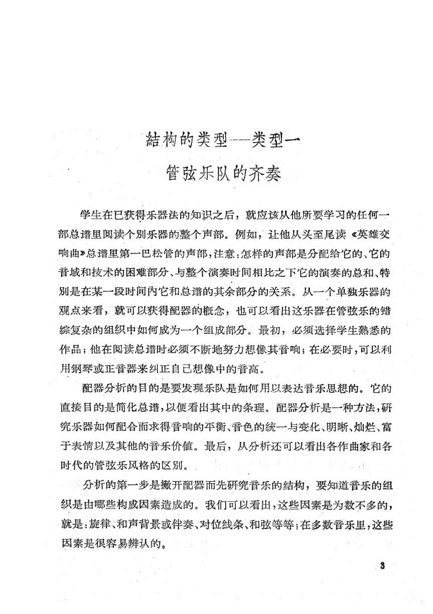
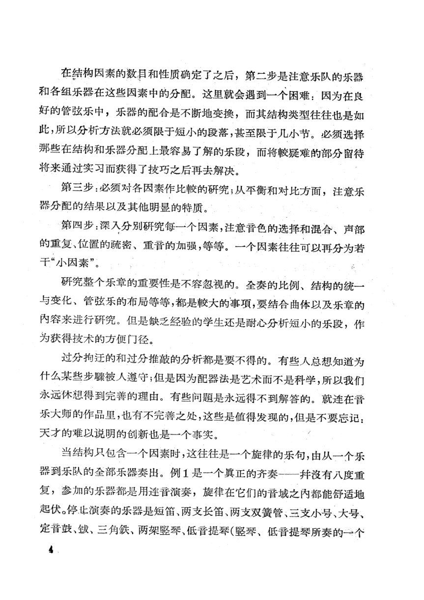
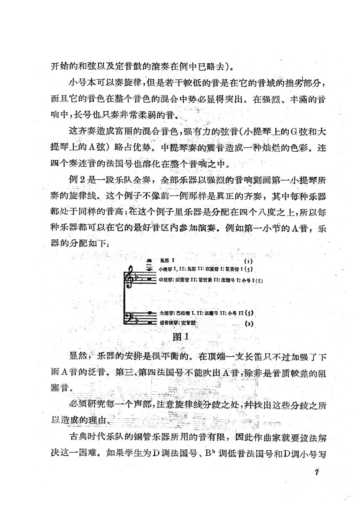
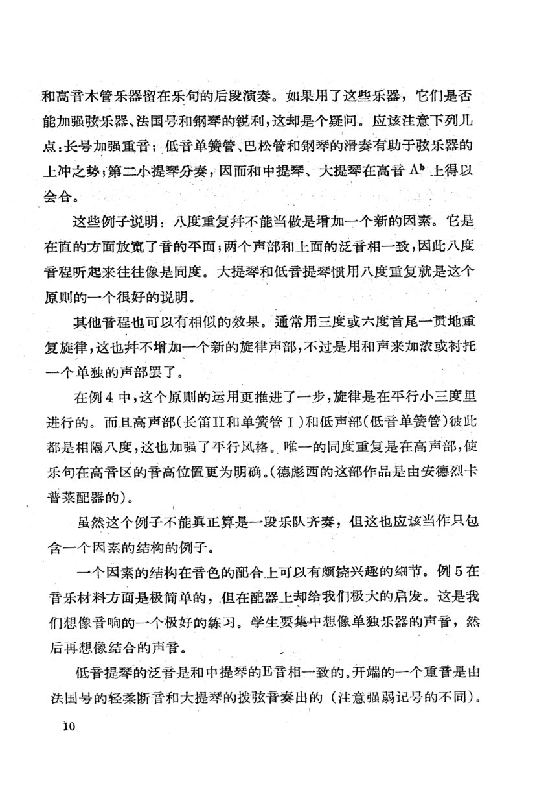
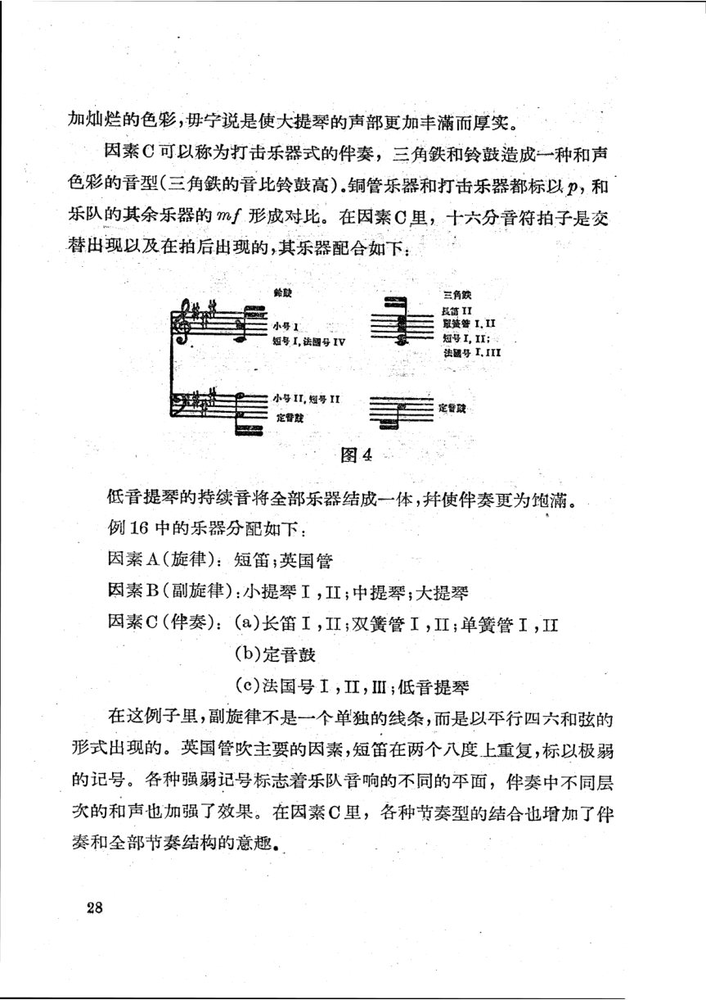
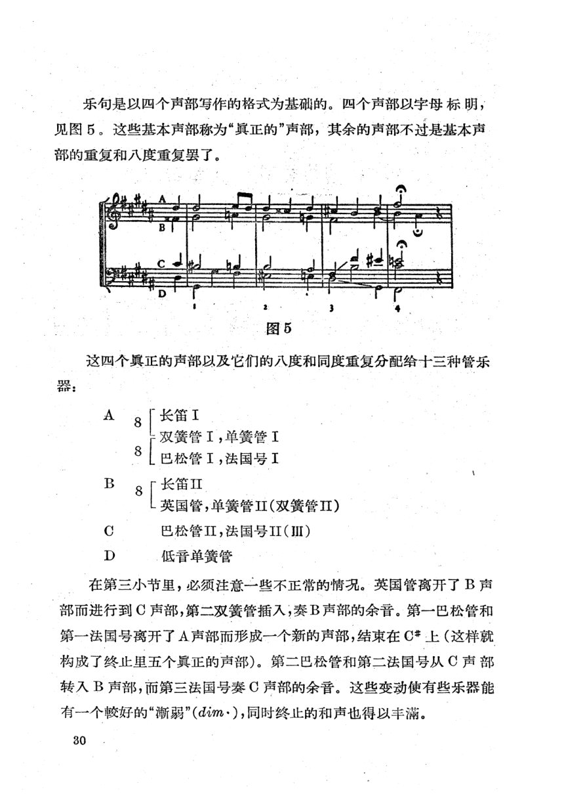
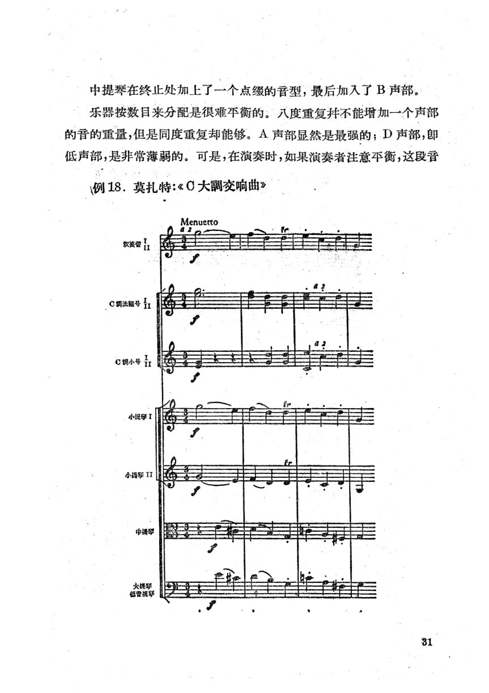
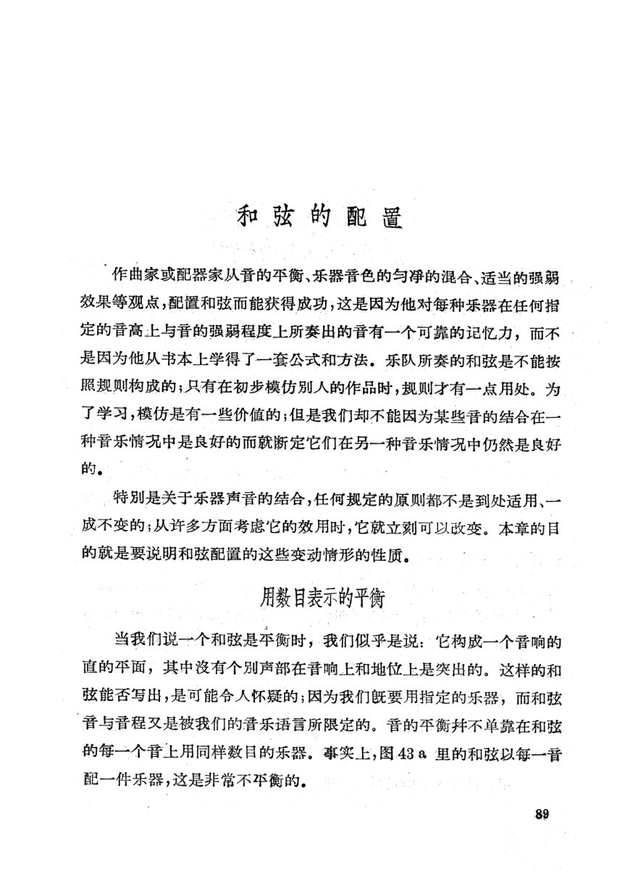
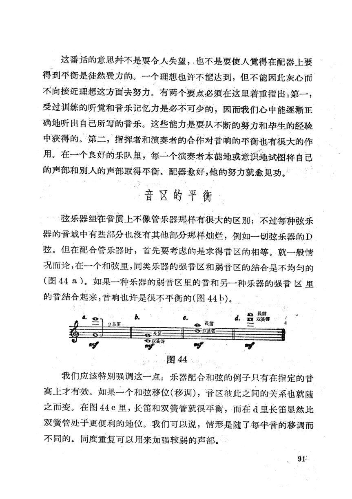

PDF 第 7 页
辟斯顿 · 印刷 p.8 · 配器分析 · 结构类型一：管弦乐队的齐奏
結构的类型-类型一
管弦乐队的齐奏
学生在已获得乐器法的知识之后，就应该从他所要学习的任何一
部总谱里阅读个别乐器的整个声部。例如，让他从头至尾读《英雄交
响曲》总谱里第一巴松管的声部，注意：怎样的声部是分配给它的、它的
音域和技术的困难部分、与整个演奏时间相比之下它的演奏的总和、特
别是在某一段时间内它和总谱的其余部分的关系。从一个单独乐器的
观点来看，就可以获得配器的概念，也可以看出这乐器在管弦乐的错
综复杂的组织中如何成为一个组成部分。最初，必须选择学生熟悉的
作品；他在阅读总谱时必须不断地努力想像其音响；在必要时，可以利
用钢琴或正音器来纠正自已想像中的音高。
配器分析的目的是要发现乐队是如何用以表达音乐思想的。它的
直接目的是简化总谱，以便看出其中的条理。配器分析是一种方法，研
究乐器如何配合而求得音响的平衡、音色的统一与变化、明晰、灿烂、富
于表情以及其他的音乐价值。最后，从分析还可以看出各作曲家和各
时代的管弦乐风格的区别。
分析的第一步是撤开配器而先研究音乐的结构，要知道音乐的组
织是由哪些构成因素造成的。我们可以看出，这些因素是为数不多的，
就是：旋律、和声背景或件奏、对位线条、和弦等等；在多数音乐里，这些
因素是很容易辨认的。
8
本手册使用本页- adler.foreground-background
整体配器必须把全乐队划分为前景、中景和背景，并让各层承担不同的听觉权重。“我们可以看出，这些因素是为数不多的，就是：旋律、和声背景或件奏、对位线条、和弦等等；在多数音乐里，这些因素是很容易辨认的。”
- piston.analysis-protocol
配器分析先撤开配器研究结构，再考察乐器分配、平衡、对比与各因素的细节处理。“分析的第一步是撤开配器而先研究音乐的结构，要知道音乐的组织是由哪些构成因素造成的。”
- yang.balance-definition
音量平衡同时包含纵向声部比例和横向换手时的力度延续；不能只按乐器数量配平。“配器分析是一种方法，研究乐器如何配合而求得音响的平衡、音色的统一与变化、明晰、灿烂、富于表情以及其他的音乐价值。”
PDF 第 8 页
辟斯顿 · 印刷 p.9 · 配器分析 · 分析步骤
在结构因素的数目和性质确定了之后，第二步是注意乐队的乐器
和各组乐器在这些因素中的分配。这里就会遇到一个困难：因为在良
好的管弦乐中，乐器的配合是不断地变换，而其结构类型往往也是如
此，所以分析方法就必须限于短小的段落，甚至限于几小节。必须选择
那些在结构和乐器分配上最容易了解的乐段，而将较疑难的部分留待
将来通过实习而获得了技巧之后再去解决。
第三步：必须对各因素作比较的研究；从平衡和对比方面，注意乐
器分配的结果以及其他明显的特质。
第四步：深入分别研究每一个因素，注意音色的选择和混合、声部
的重复、位置的疏密、重晋的加强，等等。一个因素往往可以再分为若
干“小因素”
研究整个乐章的重要性是不容忽视的。全奏的比例、结构的统一
与变化、管弦乐的布局等等，都是较大的事项，要结合曲体以及乐章的
内容来进行研究。但是缺乏经验的学生还是耐心分析短小的乐段，作
为获得技术的方便门径。
过分拘迁的和过分推敲的分析都是要不得的。有些人总想知道为
什么某些步骤被人遵守；但是因为配器法是艺术而不是科学，所以我们
永远休想得到完善的理由。有些问题是永远得不到解答的。就连在晋
乐大师的作品里，也有不完善之处，这些是值得发现的，但是不要忘记：
天才的难以说明的创新也是一个事实。
当结构只包含一个因素时，这往往是一个旋律的乐句，由从一个乐
器到乐队的至部乐器奏出。例1是一个翼正的齐奏-一并没有八度重
复，参加的乐器都是用连音演奏，旋律在它们的晋域之内都能舒适地
起伏。停止演奏的乐器是短笛、两支长笛、两支双簧管、三支小号、大号、
定音鼓、、三角铁、两架琴、低音提琴（琴、低音提琴所奏的一个
PDF 第 11 页
辟斯顿 · 印刷 p.7 · 配器分析 · 一个因素的结构
开始的和弦以及定音鼓的滚奏在例中已略去)。
小号本可以奏旋律，但是若干较低的音是在它的晋域的拙劣部分，
而且它的音色在整个音色的混合中势必显得突出。在强烈、丰满的音
响中，长号也只奏非常柔弱的音。
这齐奏造成富丽的混合音色，强有力的弦晋（小提琴上的G弦和大
提琴上的A弦）略占优势。中提琴奏的震音造成一种灿烂的色彩。连
四个奏连音的法国号也溶化在整个晋响之中。：
例2是一段乐队全奏，全部乐器以强烈的音响刻画第一小提琴所
奏的旋律线。这个例子不像前一例那样是具正的齐奏，其中每种乐器
都处于同样的晋高；在这个例子里乐器是分配在四个八度之上，所以每
种乐器都可以在它的最好晋区内参加演奏。例如第一小节的A晋，乐
器的分配如下：
長笛I
(i)
小提琴1,II；是笛II:双接管I：部签管1（s）
中提琴；双资管I：單管簧II：法图号I；小号I（5）
大提琴：巴松管I，II:法题号II:小号II（5）
二低普据：定智款
(2)
图1
显然，乐器的安排是很平衡的。在顶端一支长笛只不过加强了下
面A音的泛晋。第三、第四法国号不能吹出A音，除非是音质较差的阻
塞音。
必须研究每一个声部，注意旋律线分歧之处，拜找出这些分歧之所
以造成的理由。
古典时代乐队的铜管乐器所用的音有限，因此作曲家就要设法解
决这一困难。如果学生为D调法国号、B调低音法国号和D调小号写
7
本手册使用本页- adler.tutti-unison-octave
同度全奏受音域限制，真正的同度全奏很少；八度全奏通过扩大音区、增加组别与高频能量，提高响度与频带覆盖。“在这个例子里乐器是分配在四个八度之上”
PDF 第 14 页
辟斯顿 · 印刷 p.15 · 配器分析 · 一个因素的结构
和高音木管乐器留在乐句的后段演奏。如果用了这些乐器，它们是否
能加强弦乐器、法国号和钢琴的锐利，这却是个疑问。应该注意下列几
点：长号加强重普；低普单簧管、巴松管和钢琴的滑奏有助于弦乐器的
上冲之势；第二小提琴分奏，因而和中提琴、大提琴在高音A上得以
会合。
这些例子说明：八度重复不能当做是增加一个新的因素。它是
在值的方面放宽了晋的平面；两个声部和上面的泛普相一致，因此八度
普程听起来往往像是同度。大提琴和低音提琴惯用八度重复就是这个
原则的一个很好的说明。
其他普程也可以有相似的效果。通常用三度或六度首尾一贯地重
复旋律，这也并不增加一个新的旋律声部，不过是用和声来加浓或衬托
一个单独的声部罢了。
在例4中，这个原则的运用更推进了一步，旋律是在平行小三度里
进行的。而且高声部(长笛II和单簧管I)和低声部(低普单簧管)彼此
都是相隔八度，这也加强了平行风格。唯一的同度重复是在高声部，使
乐句在高音区的普高位置更为明确。（德彪西的这部作品是由安德烈卡
普莱配器的）。
虽然这个例子不能真正算是一段乐队齐奏，但这也应该当作只包
含一个因素的结构的例子。
一个因素的结构在音色的配合上可以有颇饶兴趣的细节。例5在
普乐材料方面是极简单的，但在配器上却给我们极大的启发。这是我
们想像音响的一个极好的练习。学生要集中想像单独乐器的声普，然
后再想像结合的声普。
低音提琴的泛音是和中提琴的E音相一致的。开端的一个重音是由
法国号的轻柔断音和大提琴的拨弦音奏出的（注意强弱记号的不同)。
10
PDF 第 32 页
辟斯顿 · 印刷 p.28 · 配器分析 · 打击乐器式的伴奏
加灿烂的色彩，母宁说是使大提琴的声部更加丰满而厚实。
因素C可以称为打击乐器式的件奏，三角铁和铃鼓造成一种和声
色彩的音型（三角鉄的音比铃鼓高）.铜管乐器和打击乐器都标以p，和
乐队的其余乐器的mf形成对比。在因素C里，十六分普符拍子是交
替出现以及在拍后出现的，其乐器配合如下：
三角跌
長笛II
取签管I.II
短号I,II；
法号I.III
小号II，短号II
定音政
定智裁
图4
低音提琴的持续音将全部乐器结成一体，并使件奏更为饱满。
例16中的乐器分配如下：
因素A（旋律)：短笛；英国管
因素B（副旋律)：小提琴I，ⅡI；中提琴；大提琴
因素C（件奏)：(a)长笛I，II；双簧管I，II；单簧管I，ⅡI
(b)定音鼓
(c)法国号I，II，ⅢI；低音提琴
在这例子里，副旋律不是一个单独的线条，而是以平行四六和弦的
形式出现的。英国管吹主要的因素，短笛在两个八度上重复，标以极弱
的记号。各种强弱记号标志着乐队音响的不同的平面，件奏中不同层
次的和声也加强了效果。在因素C里，各种节奏型的结合也增加了伴
奏和全部节奏结构的意趣.
28
PDF 第 34 页
辟斯顿 · 印刷 p.30 · 结构类型四 · 分部写作
乐句是以四个声部写作的格式为基础的。四个声部以字母标明，
见图5。这些基本声部称为“真正的”声部，其余的声部不过是基本声
部的重复和八度重复罢了。
图5
这四个真正的声部以及它们的八度和同度重复分配给十三种管乐
器：
长笛I
A
双簧管工，单簧管I
8
巴松管I，法国号I
B
「长笛Ⅱ
8
英国管，单簧管Ⅱ（双簧管）
巴松管Ⅱ，法国号I（Ⅲ）
C
D
低音单簧管
在第三小节里，必须注意一些不正常的情况。英国管离开了B声
部而进行到C声部，第二双簧管插入，奏B声部的余音。第一巴松管和
第一法国号离开了A声部而形成一个新的声部，结束在C#上（这样就
构成了终止里五个具正的声部)。第二巴松管和第二法国号从C声部
转入B声部，而第三法国号奏C声部的余音。这些变动使有些乐器能
有一个较好的“渐弱”（dim·），同时终止的和声也得以丰满。
30
PDF 第 35 页
辟斯顿 · 印刷 p.31 · 结构类型四 · 分部写作
中提琴在终止处加上了一个点缀的音型，最后加入了B声部。
乐器按数目来分配是很难平衡的。八度重复抖不能增加一个声部
的音的重量，但是同度重复却能够。A声部显然是最强的；D声部，郎
低声部，是非常薄弱的。可是，在演奏时，如果演奏者注意平衡，这段晋
例18.莫扎特：《0大調交响曲》
Menuetto
a2
C小号
小提琴
龄
中提琴
大提琴
龄
31
PDF 第 97 页
辟斯顿 · 印刷 p.89 · 配器法 · 和弦的配置
和弦的配置
作曲家或配器家从晋的平衡、乐器音色的匀净的混合、适当的强弱
效果等观点，配置和弦而能获得成功，这是因为他对每种乐器在任何指
定的晋高上与音的强弱程度上所奏出的音有一个可靠的记忆力，而不
是因为他从书本上学得了一套公式和方法。乐队所奏的和弦是不能按
照规则构成的；只有在初步模仿别人的作品时，规则才有一点用处。为
了学习，模仿是有一些价值的；但是我们却不能因为某些音的结合在一
种音乐情况中是良好的而就断定它们在另一种音乐情况中仍然是良好
的。
特别是关于乐器声音的结合，任何规定的原则都不是到处适用、一
成不变的；从许多方面考虑它的效用时，它就立刻可以改变。本章的目
的就是要说明和弦配置的这些变动情形的性质。
用数目表示的平衡
当我们说一个和弦是平衡时，我们似乎是说：它构成一个普响的
直的平面，其中没有个别声部在音响上和地位上是突出的。这样的和
弦能否写出，是可能合人怀疑的；因为我们既要用指定的乐器，而和弦
音与音程又是被我们的晋乐语言所限定的。晋的平衡抖不单靠在和弦
的每一个音上用同样数目的乐器。事实上，图43。里的和弦以每一音
配一件乐器，这是非常不平衡的.
89
PDF 第 99 页
辟斯顿 · 印刷 p.91 · 配器法 · 音区的平衡
这番话的意思不是要合人失望，也不是要使人觉得在配器上要
得到平衡是徒然费力的。一个理想也许不能达到，但不能因此灰心而
不向接近理想这方面去努力。有两个要点必须在这里着重指出：第一，
受过训练的听觉和音乐记忆力是必不可少的，因而我们心中能逐渐正
确地听出自已所写的音乐。这些能力是要从不断的努力和毕生的经验
中获得的。第二，指挥者和演奏者的合作对音响的平衡也有很大的作
用。在一个良好的乐队里，每一个演奏者本能地或意识地试图将自己
的声部和别人的声部取得平衡。配器愈好，他的努力就愈见功。
音区的平衡
弦乐器组在音质上不像管乐器那样有很大的区别；不过每种弦乐
器的音域中有些部分也没有其他部分那样灿烂，例如一切弦乐器的D
弦。但在配合管乐器时，首先要考虑的是求得音区的相等。就一般情
况而论，在一个和弦里，同类乐器的强音区和弱音区的结合是不均匀的
（图448）。如果一种乐器的弱音区里的音和另一种乐器的强音区里
的音结合起来，音响也许是很不平衡的(图44b)。
b.
長笛
每5蛋
一双黄营
图44
我们应该特别强调这一点：乐器配合和弦的例子只有在指定的音
高上才有效。如果一个和弦移位(移调)，晋区彼此之间的关系也就随
之而变。在图44c里，长笛和双簧管就很平衡，而在d里长笛显然比
双簧管处于更便利的地位。我们可以说，情形是随了每牛音的移调而
不同的。同度重复可以用来加强较弱的声部。
91